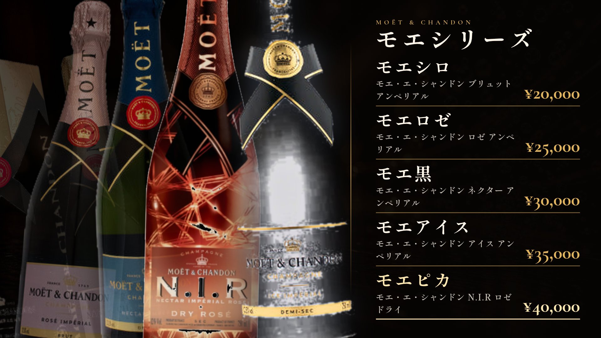
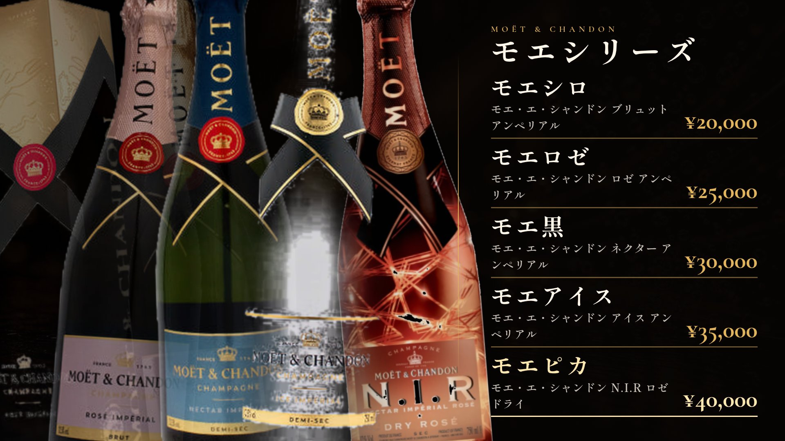
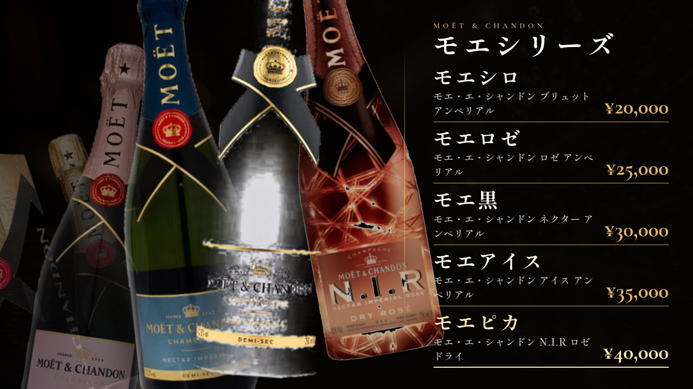
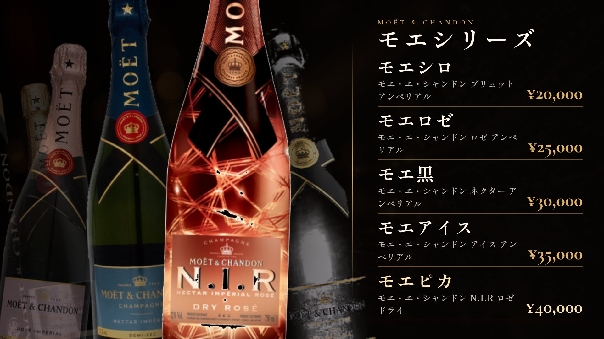
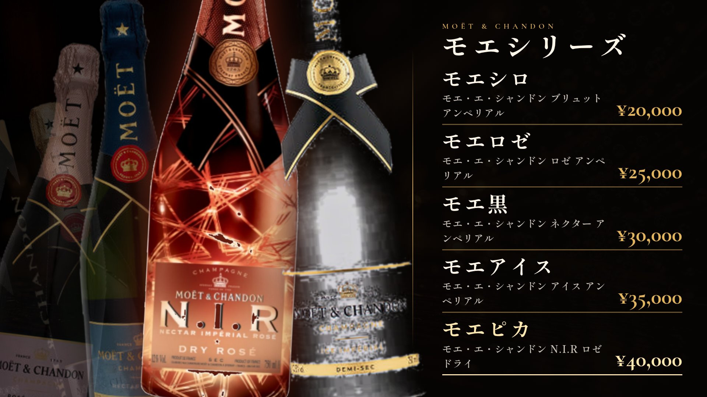
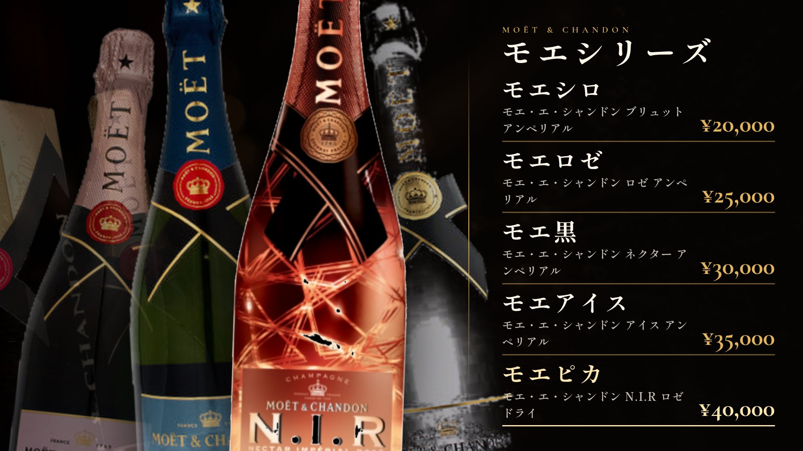
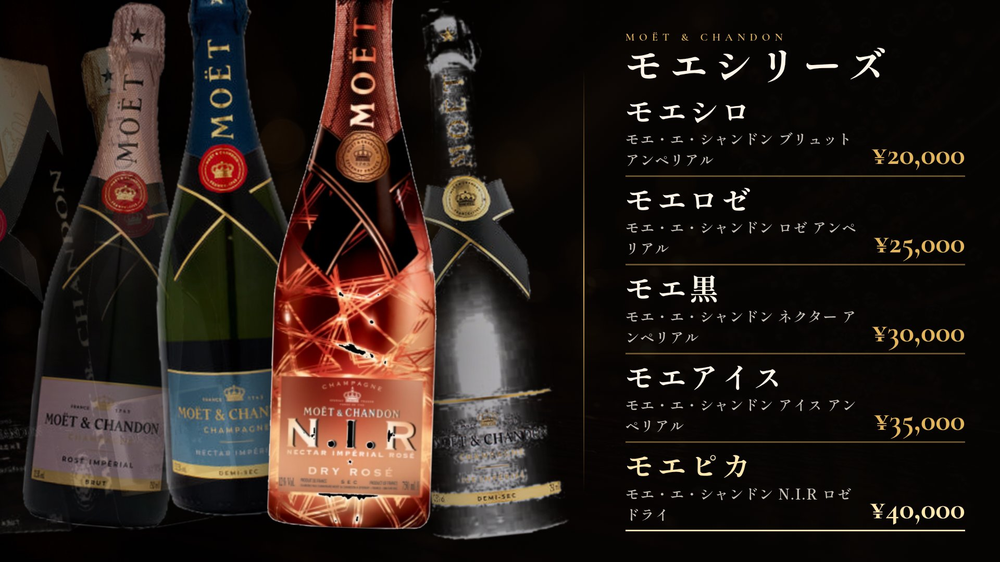
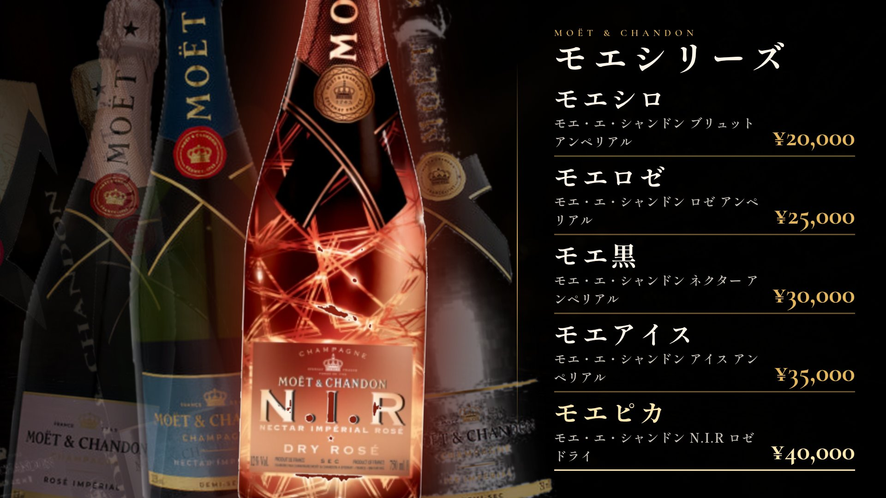
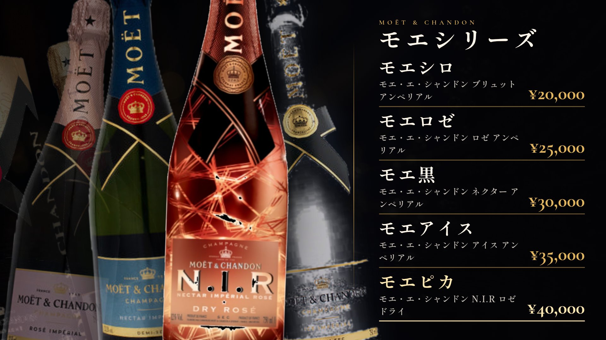
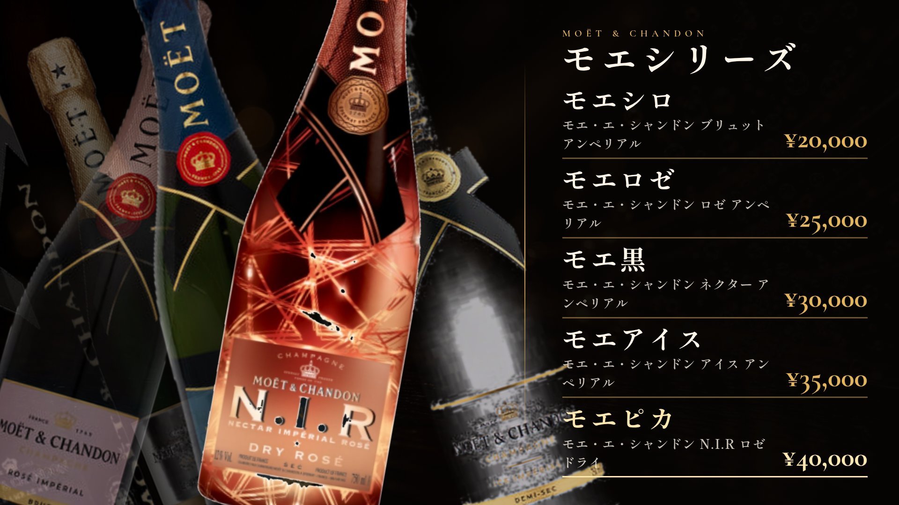

01 · ベース（現行07）

02 · ピカ特大ヒーロー
03 · アイスが金ラインへ

04 · ロゼ主導の扇状
05 · 5本で壁のように埋める

06 · 左下から右上へ斜め上昇

07 · 寄りトリミング・迫力
08 · 遠近を強くした奥行き

09 · ピカ＋アイスの二枚看板

10 · 左から階段状カスケード
11 · 文字側へ大きくはみ出し
12 · ローアングル・足元強調

13 · ラベルが読める高さ

14 · 深ノワール＋ピカ発光

15 · 暖色ヘイズ
16 · クールスチール

17 · 交差する強い傾き

18 · 半透明エコー重ね
19 · 3本フォーカス＋2影
20 · バー反射感
近い案の番号（複数可）を送ってください。